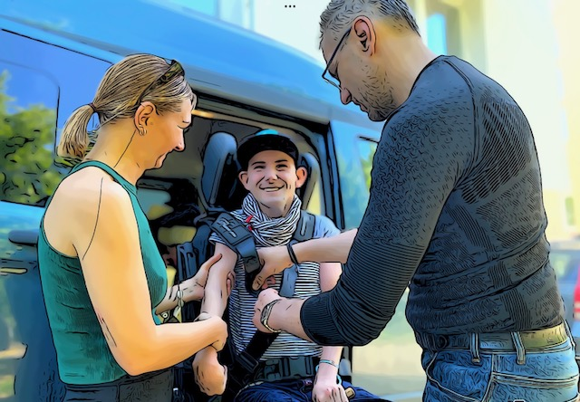

Domluvte se s Kubim
Jestli se bude chtít vykoupat, nebo pojedete na chvilku ven, nebo si budete číst… a jestli se Vám bude chtít upéct ten štrůdl… uvidíte. Včera Jakub celý den proležel, byla u nás na tři hoďky Majda, četli si. Dnes je tu Rachel, zkušená asistentka, s Kubou se dobře znají. Rachel je zaučená tak, že už nemusí myslet na to, co se jak dělá. Už dávno s Jakubem tvoří příjemný tandem a atmosféru kamarádství. Můžu v klidu odejít.
V šest přicházíme s Lefíkem ze sauny a oni s náskokem pěti minut sotva sundávají bundu, byli venku. “Kuba si řekl, tak jsme šli. Dneska měl takový den ANO “ říká Rachel. Mám upřímnou radost. Protože včera měl celý den NE. A to je právě ten rozdíl mezi doma a jakoukoliv sociální službou. Když chcete ležet, ležíte, když chcete jít ven, jdete ven.
Asistence se také plánují dopředu, to nelze jinak. Ale zdravotní stav se naplánovat nedá. Doma to nevadí. Není potřeba nikam nikoho vláčet. Nemusí jíst, když nechce, někam chodit, když nechce. Kuba není z těch, co volá za každou cenu po společnosti dalších klientů, naopak. Má rád svůj klid, čím je starší, tím víc. Je v centru svého vlastního života, ve svém doma a ta služba a program tomu odpovídá. Mě nevadí, že mám doma skoro každý den návštěvu v podobě asistenta. Jsem zvyklá, že ta návštěva přináší pomoc, rozptýlení a mě chvilku volna. Většinu těch lidí, co k nám přijdou, vidím upřímně ráda a pokud to tak není, dá se to změnit, nastavit. Nemusíme se navzájem trápit. Tolik úžasných lidí nám prošlo životem, tolik zajímavých příběhů. Teď testujeme už třetího Petra a zdá se, že to jméno je pro asistenta a pro nás docela šťastné. Má hlavu napůl blonďatou a napůl černou a neuvěřitelně zvučný hlas. Tak co nám zahrajete Petře, než Kuba dojí? A Petr vezme jednu z mých kytar a na první dobrou vypálí naší mimořádně oblíbenou “Zkouším se prokopat ven“. A je náš.
Petrovi druhému, až dorazí na asistenci, vrátím knížky, které nám půjčil a se kterým máme společné mudrování nad životem. Však nám taky půjčil Kámen mudrců Ankera Larsena. Čteme ho s Kubim oba. No a ten, který celou tu sérii Petrů kdysi odstartoval, tak tomu občas zavolám omylem, protože ho mám dodnes, už patnáct let uloženého jako Petra asistenta, ikdyž je už dávno i se svojí ženou a dětmi náš kamarád a kumpán u ohně na Folkových prázdninách. Je to jako živá voda ta asistence. Ano, jako život sám.